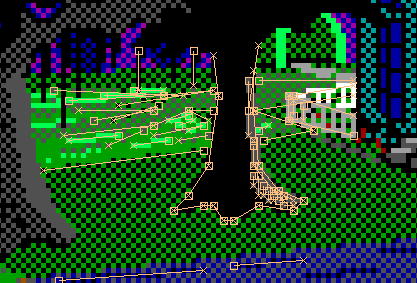

By clicking on the Light up lines button (or pressing CTRL-L), you can activate a feature that "lights up" lines that appear before the current position in the picture, and that are near the mouse cursor. This serves two purposes.

If you happen to draw the control or priority lines at different times than the visual ones, this will help you draw identical lines on other screens.
Often you want to outline a shape in a different colour. By seeing exactly what lines were drawn to make that shape, you can draw identical lines offset by just one pixel. Then, the two colours will line up perfectly without gaps.
The line direction (important) is indicated by the boxes (rear) and crosses (front).